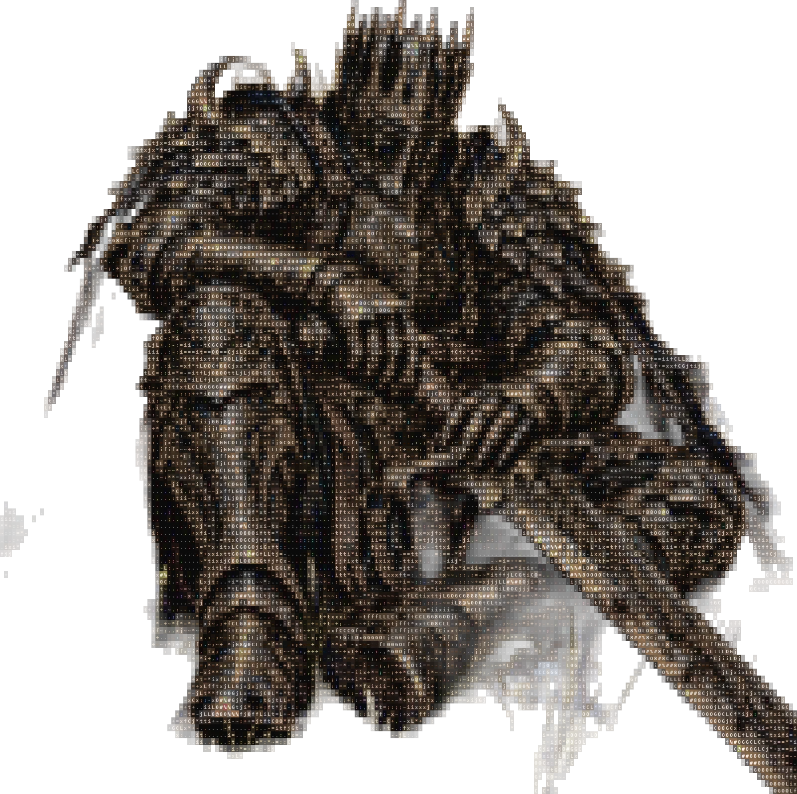
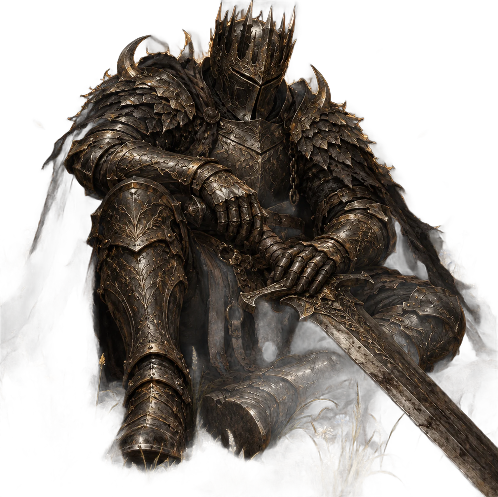

katharos
O otimizador de Windows que explica antes de mexer. Mede o PC, dá uma nota, mostra cada um dos 170 ajustes com o que você ganha e o que perde, e desfaz qualquer um do jeito que estava.
καθαρός, em grego: limpo, purificado.
guerreiro.txt
200 × 114 caracteres
passe o mouse para limpar


- funciona em
- Windows 10 e 11
- precisa de
- Python 3.8+, e ele instala se faltar
- tamanho
- um arquivo, zero dependências
- segurança
- ● Defender e Update intactos
Vinte e sete comandos num arquivo só
Um katharos.py com tudo dentro e um KATHAROS.bat que pede administrador e instala o Python se faltar. Por baixo, só ferramentas do próprio Windows: PowerShell, DISM, sfc, chkdsk, powercfg e winget. Use o menu ou chame direto pelo nome.
conhecer o PC
raioxPergunta o que incomoda, mede tudo e mostra a causa de cada problemamedirCPU, RAM, disco, temperatura e boot, antes e depoismemoriaQuem ocupa a RAM e o que dá para liberar de verdade
otimizar tudo
turboPonto de restauração, mede, aplica, reinicia, continua sozinho e mede de novoturbo --planoRepete as mesmas escolhas em outro PC, sem perguntar nada
por partes
limparTemporários, Windows Update, shaders, logs, Windows.oldprogramasBloatware de Dell, HP, Lenovo, Acer, ASUS, McAfee, NortoniaCopilot, Recall e a IA do Paint, do Bloco de Notas e do EdgeservicosSó os que este PC não usa: ele olha impressora, Bluetooth, WSLjogosModo de Jogo, Game DVR, prioridade para mais de 60 jogos
manutenção
agendarUma tarefa por semana, só com o PC parado e na tomadadesfazerVolta cada valor exatamente ao que era antesrestaurarPontos de restauração do Windows
Três modos, e a última palavra é sua
O modo só decide o que já vem marcado. Em toda tela, cada ajuste diz o que faz, o que você ganha e o que você perde. Marque e desmarque o que quiser, ou rode com --teste para ver tudo sem mudar nada.
seguro
Só o que não tem contrapartida. Bom para o PC do trabalho ou o de outra pessoa.
telemetria, anúncios, temporários, tarefas inúteis
equilibrado
O seguro mais o que quase ninguém usa. É o recomendado para a maioria.
IA do Windows, widgets, Xbox se você não joga, efeitos
extremo
Tudo o que pode ajudar neste PC. Cada item diz exatamente o que você perde.
sensores, área de trabalho remota, hibernação, rede
✓ 12 plano fresco (notebook que esquenta) seguro Plano Equilibrado e, em todos os planos: CPU mínima 5%, turbo eficiente e economia do PCIe. ganho: mais frio, silencioso e mais bateria custo: picos de desempenho um pouco menores neste PC: notebook, então vem marcado
Ele sabe com que PC está falando. Não oferece desligar a impressão se há impressora, deixa o Xbox em paz em quem tem jogos, dobra o tempo limite em HD e nunca mexe no que protege o Windows.
O que ele nunca faz
Muitos otimizadores ganham velocidade tirando a segurança do Windows. O Katharos não. Mesmo no modo extremo, isto fica de fora de propósito.
Desligar o Defendero antivírus fica sempre ligadoDesligar o Windows Updateele atualiza, não bloqueiaDesligar firewall, UAC ou SmartScreentroca segurança por nada
Desligar a Integridade de Memóriaganho pequeno, risco grandeDesligar a memória virtualprogramas fecham sem elaApagar arquivos seus de vezeles vão para a Lixeira
desfazer exato
Antes de cada mudança, guarda o valor anterior do registro, dos serviços, das tarefas e da energia. O desfazer volta valor por valor.
nada trava
Cada etapa roda com limite de tempo. Se uma travar, é encerrada e o resto segue. O turbo continua sozinho depois do reinício.
sem truque
Só políticas documentadas e ferramentas oficiais do Windows. Nenhum limpador de registro, nenhuma exceção no antivírus.
Pronto em três passos
Funciona no Windows 10 e no 11. Precisa de administrador, e o próprio arquivo pede.
Baixe e extraia
O ZIP tem o
katharos.py, oKATHAROS.bate o manual.Abra o KATHAROS.bat
Dois cliques. Ele pede administrador e instala o Python oficial se o PC não tiver.
Comece pelo raio-x
Digite
1no menu. Depois abra só as telas que ele sugerir, ou rode oturbo.